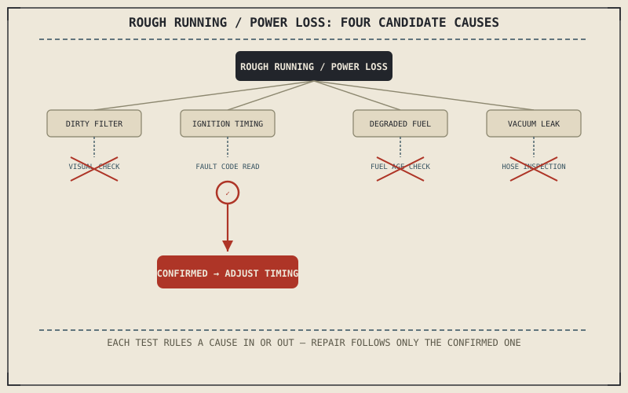

A rough idle, a flat spot under acceleration, or a general loss of power are among the most common symptoms a rider notices, and Chapter 2.3's air-fuel matching gives away exactly why: combustion needs the right air-fuel ratio at the right ignition timing, and nearly every engine performance symptom traces back to one of those two things going wrong, or to something upstream of them.
Chapter 11.1 closed by naming engine performance problems as this chapter's first applied diagnosis. This chapter covers it.
Listing the Plausible Causes Before Testing Any of Them
Following Chapter 11.1's method, a rough idle or power loss has several plausible causes worth listing before testing begins: Chapter 10.8's clogged air filter skewing the mixture richer, Chapter 2.4's ignition timing drifting from its intended advance curve, degraded fuel from Chapter 10.9's storage discussion leaving deposits in the fuel system, or a vacuum leak admitting unmetered air past the throttle body Chapter 2.3 described. Each of these produces a broadly similar symptom — the engine simply doesn't run as smoothly or powerfully as expected — which is exactly why Chapter 11.1 emphasized testing to distinguish between them rather than guessing.
Testing to Narrow the List
A clogged air filter is quickly ruled in or out by direct visual inspection, the fastest test on this list. A fuel-related cause can be narrowed by checking fuel age and, if recently stored, considering Chapter 10.9's degradation timeline. Ignition timing and vacuum leaks are harder to inspect directly, but a fault code reader on a fuel-injected motorcycle, or a systematic check of intake connections for cracked hoses on any bike, can each rule in or out their respective cause without yet touching a single other component. Following Chapter 11.1's principle, each test is chosen because it distinguishes one specific cause from the others, not because it's simply the easiest thing to check first.
Rough running and power loss can come from a dirty filter, bad ignition timing, degraded fuel, or a vacuum leak — four different causes with broadly similar symptoms, which is exactly why Chapter 11.1's targeted testing matters more here than almost anywhere else in this book.

A diagnostic flowchart for rough running or power loss, showing four candidate causes — dirty air filter, ignition timing, degraded fuel, vacuum leak — each with a specific test narrowing the list toward a confirmed cause.
Stalling: A Related but Distinct Symptom
Stalling, particularly at idle or low speed, adds Chapter 3.2's clutch engagement to the list of plausible causes alongside the fuel and ignition possibilities already covered — an idle speed set too low, combined with a slightly abrupt clutch release, can stall an otherwise healthy engine in a way that looks identical to a fuel or ignition problem from the rider's seat. Distinguishing this cause specifically requires testing whether the engine stalls at idle with the clutch fully disengaged and the bike stationary, which isolates the clutch-engagement variable Chapter 3.2 described from the combustion-related causes covered earlier in this chapter.
A Common Misconception, Cleared Up Early
It's a common assumption that engine performance problems are inherently complex, requiring specialized diagnostic equipment beyond a typical rider's reach. Several of the most common causes this chapter described — a dirty air filter, an obvious vacuum leak, old fuel, a too-low idle speed — are identifiable through direct inspection or simple tests, applying Chapter 11.1's method without needing anything beyond the checks already established in Part X. Complexity in diagnosis usually comes from skipping the systematic listing-and-testing process, not from the underlying problem itself being unusually difficult.
Where This Leads
Engine performance problems assume the engine is at least attempting to run. A motorcycle that won't start at all points to a different, earlier set of possible causes. Chapter 11.3 turns to diagnosing starting and ignition problems next.
Key Concepts to Remember
- Rough running and power loss commonly trace to a dirty air filter, drifted ignition timing, degraded fuel, or a vacuum leak, each producing a broadly similar symptom.
- Each candidate cause has a specific test that can rule it in or out, following Chapter 11.1's principle of targeted testing over guessing.
- Stalling adds clutch engagement as a distinct candidate cause alongside combustion-related possibilities, distinguishable by testing with the clutch fully disengaged.
Cross-References
| ← Ch. 11.1 | Established the symptom-cause-test-confirm method; this chapter applies it directly to a specific, common category of symptom. |
| ← Ch. 10.8 | Established a dirty air filter skewing the air-fuel mixture; this chapter lists that same mechanism as a candidate cause for rough running. |
| ← Ch. 3.2 | Established the clutch's engagement mechanism; this chapter shows abrupt engagement as a distinct candidate cause for stalling. |
| → Ch. 11.3 | Covers diagnosing starting and ignition problems, for a motorcycle that won't run at all. |